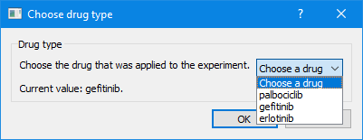
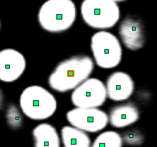

Working with custom metadata
In OrganoidTracker, you can apply custom metadata to individual positions, links or even experiments as a whole. For example, you could store the moment in time where you added a certain drug to your experiment.
There is one catch: almomst all interaction with metadata needs to be done through plugins. OrganoidTracker by itself uses metadata in a few specific scenarios (like for error reporting in cell tracking), but it cannot interact with generic metadata. So that means it’s time to write code!
First, you’ll need to know how to write an OrganoidTracker plugin. That is discussed on the plugin tutorial page. After completion of that tutorial, you can get started to add custom metadata.
Metadata for an experiment as a whole
We will start by introducing metadata that applies to an experiment as a whole. From code, it’s quite straightforward to set or get some metadata:
from organoid_tracker.core.experiment import Experiment
experiment = Experiment()
experiment.global_data.get_data("drug_type") # Will return None
experiment.global_data.set_data("drug_type", "control")
experiment.global_data.get_data("drug_type") # Will now return "control"
You can store floats, integers, strings, booleans and lists of those. For example, this would also work:
from organoid_tracker.core.experiment import Experiment
experiment = Experiment()
experiment.global_data.set_data("temperature_by_time_point", [20.1, 20.4, 21.2, 21.9, 22.3, 23.2, 25.4, 27.1, 29.8, 31.2])
Storing more complex objects is not possible though, so you need to find a way to distribute the information over multiple metadata values. Let’s say you want to store an organoid_tracker.core.Color instance. You would need to do that as follows:
To delete a piece of metadata, simply set it to None:
from organoid_tracker.core.experiment import Experiment
experiment = Experiment()
experiment.global_data.set_data("my_data", None)
Making experiment metadata available to the end user
You’ll find that metadata is not accessible from the graphical OrganoidTracker program. You’ll need to write a plugin to solve this issue. Here is an example plugin for changing the drug type:
(Again, see the the plugin tutorial page for details on how to write a plugin.)
# Plugin file - save this as plugin_whatever.py in the plugins folder.
from typing import Dict, Any
from organoid_tracker.gui import option_choose_dialog
from organoid_tracker.gui.window import Window
# This adds a menu option that calls _set_drug_type
def get_menu_items(window: Window) -> Dict[str, Any]:
return {
"Edit//Set drug type...": lambda: _set_drug_type(window),
}
# This function asks the user to set a drug type
def _set_drug_type(window: Window):
experiment = window.get_experiment()
current_drug_type = experiment.global_data.get_data("drug_type")
available_drugs = [
"Choose a drug",
"palbociclib",
"gefitinib",
"erlotinib"
]
result = option_choose_dialog.prompt_list("Choose drug type", "Drug type", "Choose the drug that was applied to the experiment.\n\nCurrent value: " + str(current_drug_type) + ".", available_drugs)
if result is None or result == 0:
return # User pressed Cancel or choose "Choose a drug"
experiment.global_data.set_data("drug_type", available_drugs[result])
This provides a plugin that adds a menu option “Set drug type…” to the Edit menu, which when clicked provides the following dialog box:

This example used a list. However, there are other dialog boxes available for other data types:
from organoid_tracker.gui import dialog
# Returns an integer
dialog.prompt_int("Title", "Question?", minimum=0, maximum=10, default=2)
# Returns a floating-point number
dialog.prompt_float("Title", "Question?", minimum=0, maximum=9.5, default=2.2)
# Returns a text string
dialog.prompt_str("Title", "Question?", default="Default answer")
# Returns 1, 2 or 3
dialog.prompt_options("Title", "Question?", option_1="Answer 1", option_2="Answer 2", option_3="Answer 3")
# Returns a Color instance
from organoid_tracker.core import Color
dialog.prompt_color("Title", default_color=Color.white())
All the above dialog functions will return None if the user pressed Cancel, so please account for that in your code.
Note: storing a color is a bit less straightforward, since you cannot store this object directly. So you need to convert it to a list of numbers first, and then convert it back later when you are retrieving the data.
from organoid_tracker.core.experiment import Experiment
from organoid_tracker.core import Color
color = Color(255, 0, 0)
experiment = Experiment()
# Storing a color object
experiment.global_data.set_data("some_color", [color.red, color.green, color.blue])
# Retrieving it again
color_rgb = experiment.global_data.get_data("some_color")
if color_rgb is not None:
color = Color(int(color_rgb[0]), int(color_rgb[1]), int(color_rgb[2]))
Metadata for individual positions
Applying metadata to individual positions is a little more complex, since you need to decide to which positions it should apply. Once you’ve got a position, it is straightforward though:
from organoid_tracker.core.position import Position
from organoid_tracker.core.experiment import Experiment
# Replace this with an actual position
position = Position(0, 0, 0, time_point_number=0)
# How to store and retrieve metadata
experiment = Experiment()
experiment.positions.add(position) # Position needs to exist in dataset to store metadata
experiment.positions.set_position_data(position, "some_key", "some_value")
the_value = experiment.positions.get_position_data(position, "some_key")
You can store exactly the same types of position metadata as you could for experiment.global_data. So you can store strings, ints, floats, booleans and lists of those.
Making position metadata available to the end user
Just like for metadata that applied to the entire experiment, for position metadata we will need to write a plugin that allows the user to view and modify the data. In this example, we are going to allow the user to store a number for each position. Let’s assume that this number represents some abstract activity of the cell.
The code is going to be a bit longer this time, since we will need to create a separate screen that allows the user to view and modify the metadata. If you’ve ever opened the data editor, you have already seen such a screen.
In OrganoidTracker, all screens are classes that inherit from the Visualizer class. The base visualizer just shows an empty Matplotlib plot. OrganoidTracker has a built-in ExitableImageVisualizer class, which shows images from the experiment (like you would expect), and also returns to the main screen once you press Escape or click the Home button. If you design a custom screen, it is recommended to inherit from ExitableImageVisualizer.
The plugin consists of the following code:
# Plugin file - save this as plugin_whatever.py in the plugins folder.
from typing import Dict, Any
from matplotlib.backend_bases import MouseEvent
from organoid_tracker.gui import dialog
from organoid_tracker.gui.window import Window
from organoid_tracker.visualizer import activate
from organoid_tracker.visualizer.exitable_image_visualizer import ExitableImageVisualizer
# This adds a menu option that calls _set_cell_activity
def get_menu_items(window: Window) -> Dict[str, Any]:
return {
"Edit//Set cell activity...": lambda: _set_cell_activity(window)
}
# This class creates a new screen
class _CellActivitySetter(ExitableImageVisualizer):
"""Double-click a cell to set its activity."""
# The message above is displayed in the status bar.
def _on_mouse_click(self, event: MouseEvent):
if not event.dblclick:
return # Didn't double-click
position = self._get_position_at(event.xdata, event.ydata)
if position is None:
return # Didn't click on a position
# Get old activity
old_activity = self._experiment.positions.get_position_data(position, "activity")
if old_activity is None:
old_activity = 0
# Ask for new activity
activity = dialog.prompt_float("Activity", "Please set the activity", minimum=0, maximum=1, default=old_activity)
if activity is None:
return # User pressed cancel
# Store
self._experiment.positions.set_position_data(position, "activity", activity)
# This function simply opens the activity setting screen
def _set_cell_activity(window: Window):
activate(_CellActivitySetter(window))
Now the user can view and write down the activity of every cell. You could also expand the code to set the activity in multiple time points at once. See the API document for how to retrieve the position of the same cell in other time points.
Special case: cell types
There is one type of position metadata that OrganoidTracker has nice in-built support for: cell types. In principle, the position metadata is just stored with the key "type", and the value being something like "PANETH" or "STEM". Nothing is stopping you from treating the cell type as any other piece of metadata.
However, if you register your cell type with OrganoidTracker, then it will perform the following actions:
In the editor, you can select the cell type. OrganoidTracker will then update the position metadata for you.
If you look at the border of the position marker of a position with the cell type, you will notice that it receives special coloring.
The same color is also used when drawing the cell in a lineage tree.

Example of a cell having a cell type. Note the marker with the wider border and the different color.
You register a cell type by adding a get_markers function to your plugin. Like the get_menu_items function, this function is automatically called by OrganoidTracker:
# Store this file as plugin_whatever.py
from organoid_tracker.core.marker import Marker
from organoid_tracker.core.position import Position
def get_markers():
return [
Marker([Position], "STEM", "stem cell", (182, 1, 1)),
Marker([Position], "GOBLET", "goblet cell", (126, 255, 64))
]
The get_markers method must return a list of Markers. Each marker provides what it is targeting (Position for cell types), the name under which it is saved to the data files, a display name and a display color. The color is used for the border of the position markers and for the lineage trees.
Finally, we would like to point you to the position_markers module. This module contains a few useful functions for working with cell types.
from organoid_tracker.core.experiment import Experiment
from organoid_tracker.core.position import Position
from organoid_tracker.position_analysis import position_markers
# Replace these with real values
experiment = Experiment()
position = Position(0, 0, 0, time_point_number=0)
experiment.positions.add(position)
# This method returns the "type" metadata of a position,
# and converts it to UPPERCASE if it isn't already
position_markers.get_position_type(experiment.positions, position)
# This method sets the "type" metadata of a position,
# after converting the type to UPPERCASE if it isn't already
position_markers.set_position_type(experiment.positions, position, "PANETH")
# This method returns an iterable of all positions of the type "PANETH".
# Note that if a single Paneth cell has 100 positions over time,
# then this method will return all 100 positions of that Paneth cell.
paneth_positions = position_markers.get_positions_of_type(experiment.positions, "PANETH")
Metadata for individual links
Links are used to connect two positions at subsequent time points, to establish that both positions are of the same cell. The links themselves can also have metadata attached to them. You can set it as follows:
from organoid_tracker.core.experiment import Experiment
from organoid_tracker.core.position import Position
experiment = Experiment()
position_1 = Position(0, 0, 0, time_point_number=0)
position_2 = Position(0, 0, 0, time_point_number=1)
value = experiment.links.get_link_data(position_1, position_2, "key")
experiment.links.set_link_data(position_1, position_2, "key", "value")
Allowed data types are the same as for other metadata.